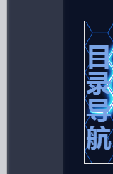
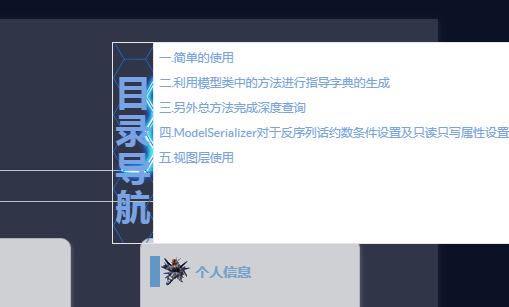
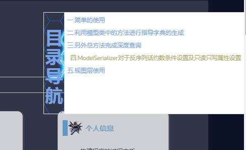

基于孤傲苍狼在2014-5-11写的目录代码基础上进行改进
<!--目录-->
<script type="text/javascript">
var BlogDirectory = {
/*
获取元素位置，距浏览器左边界的距离（left）和距浏览器上边界的距离（top）
*/
getElementPosition:function (ele) {
var topPosition = 0;
var leftPosition = 0;
while (ele){
topPosition += ele.offsetTop;
leftPosition += ele.offsetLeft;
ele = ele.offsetParent;
}
return {top:topPosition, left:leftPosition};
},
/*
获取滚动条当前位置
*/
getScrollBarPosition:function () {
var scrollBarPosition = document.body.scrollTop || document.documentElement.scrollTop;
return scrollBarPosition;
},
/*
移动滚动条，finalPos 为目的位置，internal 为移动速度
*/
moveScrollBar:function(finalpos, interval) {
//若不支持此方法，则退出
if(!window.scrollTo) {
return false;
}
//窗体滚动时，禁用鼠标滚轮
window.onmousewheel = function(){
return false;
};
//清除计时
if (document.body.movement) {
clearTimeout(document.body.movement);
}
var currentpos =BlogDirectory.getScrollBarPosition();//获取滚动条当前位置
var dist = 0;
if (currentpos == finalpos) {//到达预定位置，则解禁鼠标滚轮，并退出
window.onmousewheel = function(){
return true;
}
return true;
}
if (currentpos < finalpos) {//未到达，则计算下一步所要移动的距离
dist = Math.ceil((finalpos - currentpos)/10);
currentpos += dist;
}
if (currentpos > finalpos) {
dist = Math.ceil((currentpos - finalpos)/10);
currentpos -= dist;
}
var scrTop = BlogDirectory.getScrollBarPosition();//获取滚动条当前位置
window.scrollTo(0, currentpos);//移动窗口
if(BlogDirectory.getScrollBarPosition() == scrTop)//若已到底部，则解禁鼠标滚轮，并退出
{
window.onmousewheel = function(){
return true;
}
return true;
}
//进行下一步移动
var repeat = "BlogDirectory.moveScrollBar(" + finalpos + "," + interval + ")";
document.body.movement = setTimeout(repeat, interval);
},
htmlDecode:function (text){
var temp = document.createElement("div");
temp.innerHTML = text;
var output = temp.innerText || temp.textContent;
temp = null;
return output;
},
/*
创建博客目录，
id表示包含博文正文的 div 容器的 id，
mt 和 st 分别表示主标题和次级标题的标签名称（如 H2、H3，大写或小写都可以！），
interval 表示移动的速度
*/
createBlogDirectory:function (id, mt, st, interval){
//获取博文正文div容器
var elem = document.getElementById(id);
if(!elem) return false;
//获取div中所有元素结点
var nodes = elem.getElementsByTagName("*");
//创建博客目录的div容器
var divSideBar = document.createElement('DIV');
divSideBar.className = 'uprightsideBar';
divSideBar.setAttribute('id', 'uprightsideBar');
var divSideBarTab = document.createElement('DIV');
divSideBarTab.setAttribute('id', 'sideBarTab');
divSideBar.appendChild(divSideBarTab);
var h2 = document.createElement('H2');
divSideBarTab.appendChild(h2);
var txt = document.createTextNode('目录导航 ');
h2.appendChild(txt);
var divSideBarContents = document.createElement('DIV');
divSideBarContents.style.display = 'none';
divSideBarContents.setAttribute('id', 'sideBarContents');
divSideBar.appendChild(divSideBarContents);
//创建自定义列表
var dlist = document.createElement("dl");
divSideBarContents.appendChild(dlist);
var num = 0;//统计找到的mt和st
mt = mt.toUpperCase();//转化成大写
st = st.toUpperCase();//转化成大写
//遍历所有元素结点
for(var i=0; i<nodes.length; i++)
{
if(nodes[i].nodeName == mt|| nodes[i].nodeName == st)
{
//获取标题文本
var nodetext = nodes[i].innerHTML.replace(/<\/?[^>]+>/g,"");//innerHTML里面的内容可能有HTML标签，所以用正则表达式去除HTML的标签
nodetext = nodetext.replace(/ /ig, "");//替换掉所有的
nodetext = BlogDirectory.htmlDecode(nodetext);
//插入锚
nodes[i].setAttribute("id", "blogTitle" + num);
var item;
switch(nodes[i].nodeName)
{
case mt: //若为主标题
item = document.createElement("dt");
break;
case st: //若为子标题
item = document.createElement("dd");
break;
}
//创建锚链接
var itemtext = document.createTextNode(nodetext);
item.appendChild(itemtext);
item.setAttribute("name", num);
item.onclick = function(){ //添加鼠标点击触发函数
var pos = BlogDirectory.getElementPosition(document.getElementById("blogTitle" + this.getAttribute("name")));
if(!BlogDirectory.moveScrollBar(pos.top, interval)) return false;
};
//将自定义表项加入自定义列表中
dlist.appendChild(item);
num++;
}
}
if(num == 0) return false;
/*鼠标进入时的事件处理*/
divSideBarTab.onmouseenter = function(){
divSideBarContents.style.display = 'block';
}
/*鼠标离开时的事件处理*/
divSideBar.onmouseleave = function() {
divSideBarContents.style.display = 'none';
}
document.body.appendChild(divSideBar);
}
};
BlogDirectory.createBlogDirectory("cnblogs_post_body","h2","h3",20);
console.log('页面加载完毕生成目录')
</script>/*生成博客目录的CSS*/
/*自定制一个css3动画*/
@keyframes pulse {
25% {
transform: scale(1.05);
}
75% {
transform: scale(.95);
}
}
/*调整目录框的位置*/
#uprightsideBar {
font-size: 10px;
font-family: Arial, Helvetica, sans-serif;
text-align: left;
position: fixed;
top: 50px;
right: 0px;
width: auto;
height: auto;
}
#sideBar {
float: left;
padding: 0 0 0 65px;
}
#sideBarTab {
float: left;
width: 40px;
height: 200px;
border: 1px solid #e5e5e5;
border-right: none;
text-align: center;
background-image: url(https://www.cnblogs.com/images/cnblogs_com/pythonywy/1455951/o_%e7%82%ab%e5%bd%a9.png);
color: #79a3e5;
}
/*展开后内部内容格式*/
#sideBarContents {
float: left;
overflow: auto;
overflow-x: hidden;
min-width: 0px;
max-width: 500px;
min-height: 200px;
max-height: 1200px;
border: 1px solid #e5e5e5;
border-right: none;
background: #fff;
background-size: 100% 100%;
color: #79a3e5;
}
#sideBarContents dl {
margin: 0;
padding: 0;
}
#sideBarContents dt {
margin-top: 5px;
margin-left: 5px;
}
/*CSS3hover动画*/
#sideBarContents dd:hover, dt:hover {
animation-name: pulse;
animation-duration: 1s;
animation-timing-function: linear;
animation-iteration-count: infinite;
box-shadow: none;
color: #A7995A;
}
#sideBarContents dd {
margin-left: 20px;
}三.展示效果
未打开状态

展开效果

hover效果

1.目录由于其他js导致没法加载(最主要修改的内容)
2.修改了样式
3.修改了hover样式让他看起来更加好看